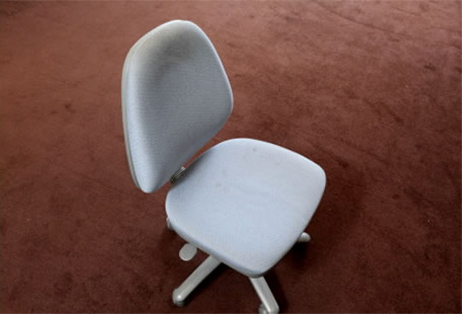

椅子やソファーのクリーニングはタック HOME > サービス一覧 > 椅子クリーニングの施工例と流れ
椅子クリーニングの施工例と作業の流れをご紹介します
タックでは椅子のクリーニングに関して独自のノウハウを確立しています。洗浄液ひとつとってもオリジナルの溶液を用いています。またバキューミングに用いる機器に関してはアメリカ US PRODUCTS社製の最新のものを利用しています。いくら良い洗剤や機器も用いたとしてもクリーニングで大切になるのは人の手です。
真心をこめて仕上げ作業を行います。
椅子クリーニングのビフォー＆アフター
-
シミがついて汚れた事務椅子
新品同様に仕上がりました！ -
油汚れがついて不快感を与えていました
すっきり鮮やかに復元しました！ -

長年使って汚れた椅子
シミも汚れもなくなり、驚くほどキレイに！
作業工程
-
- 
- 1.作業前椅子の座面や背もたれに汚れが目立ちます
-
- 2.洗浄液吹付けタックが独自に厳選した椅子クリーニング用の洗浄液スプレーを吹き付けします。
-
- 3.ブラシによる洗い出し丁寧にブラシで汚れを洗い出しします。
-
- 4.汚れの吸引アメリカ Us PRODUCTS社製の最新クリーニング機器によって汚れを吸引します。
-
- 5.仕上げダスターを使って丁寧に仕上げ作業をおこないます。
-
- 6.完成経年変化で目立っていた汚れがきれいになっています。
※写真をクリックすると各工程をご覧いただけます。